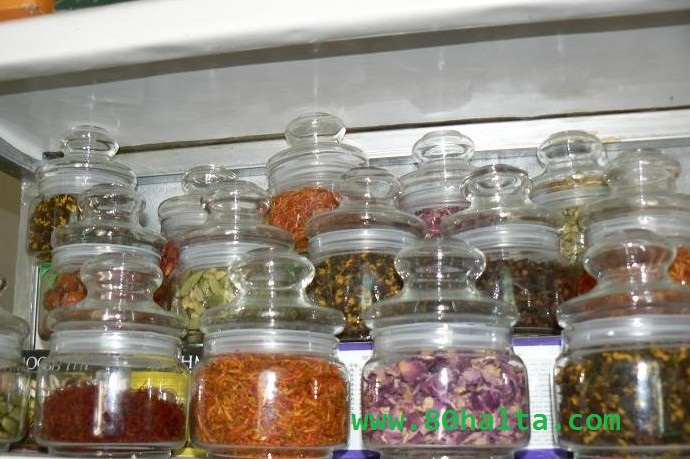

ئەسسالامۇ ئەلەيكۇم مۆھتىرەم تورداش، بلوگىمىزغا خۇش كەپسىز، قۇتلۇق قەدەملىرىڭىزگە مەرھابا!
 ئۇيغۇر تېبابەت دورىلىرى ئىسسىق كىلەمدۇ؟
ئۇيغۇر تېبابەت دورىلىرى ئىسسىق كىلەمدۇ؟
ئاپتورى:bortala ۋاقتى:2011-09-28

ئۇيغۇر تېبابەت دورىلىرىنىڭ ھەممىسى ئىسسىق تەبىئەتلىك بولمايدۇ. ئۇيغۇر تېبابىتى كېسەللىكلەرنى مىزاج ۋە خىلىتلارنىڭ تەڭپۇڭسىز بولۇشىدىن كىلىپ چىقىدۇ دەپ قارايدىغان تۇرۇقلۇق، ھەر خىل مىزاجلارنىڭ ئۆزگىرىش ئېھتىماللىقىغا ئەھمىيەت بەرمەي قالمايدۇ، ئەلۋەتتە. ئىسسىقلىق ئېشىشمۇ مەلۇم خىل كېسەللىكلەرنىڭ پەيدا بولۇش سەۋەبى بولغانىكەن، سوغۇق تەبىئەتلىك دورىلارغىمۇ تايانماي بولمايدۇ. قان ۋە سەپرادىن بولغان كېسەللىكلەرگە ئومۇمەن سوغۇقلۇق ۋە سوغۇققا مايىل دورىلار داۋا بولسا، بەلغەم ۋە سەۋدا خىلىتلىرىنىڭ تەبىئىي بولمىغان ئۆزگىرىشلىرى ئاستا خاراكتىرلىك كېسەللىك پەيدا قىلىدۇ ھەم ئۇزۇنغىچە ئىسسىق دورىلارنى بېرىشكە توغرا كىلىدۇ. پەقەت تېۋىپنى ياخشى تاللاپ...
رېماتىزم كېسەللىكىنى داۋالاش ھەققىدە
ئاپتورى:Birzat ۋاقتى:2011-06-07

80خالتا بلوگ ئىلاۋىسى: رېماتىزىم كېسەللىكى ئۈزۈل-كېسىل داۋالىماق تەس بولغان جاھىل خاراكتىرلىك كېسەللىكلەردىن بولۇپ تۆۋەندىكى يازمىدا بۇ كېسەللىكنى ئۈزۈل-كېسىل داۋالىغىلى بولىدۇ دەپ ئەنئەنىۋى بولغان بەزى رېتسىپ ۋە ئۇسۇل چارىلەر كۆرسىتىلگەن. ھەمدە ئاشۇ چارىلەرنى قىلىپ بەرگەندە بۇ كېسەللىك سەللىمازا ساقىيىپ كېتىدۇ دەپ بىمارلارغا ئۈمىد ئاتا قىلىدۇ. ئەسكەرتىش: بۇنىڭدا كۆرسىتىلگەن دورا ۋە ئۇسۇل - چارىلار تولىمۇ كۈچلۈك بولۇپ ئۈنۈمى تېز كۆرىلىشى مومكىن. لىكىن ئىھتىيات يۈزسىدىن دورا ۋە داۋالىنىش ئۇسۇللىرى ھەققىدە دوختۇر-تېۋىپنىڭ كۆرسەتمىسى بويچە ئىش قىلشىڭىزنى تەۋسىيە قىلىمىز!
خەتكۈش: رېماتىزم
تومۇرىڭىزدىكى ئۆزگىرىشلەرنى بىلىپ باققىڭىز بارمۇ؟
ئاپتورى:Birzat ۋاقتى:2011-04-22

بۇ موماينىڭ تېبابەتتىن كۆپ خەۋىرى يوق بولسىمۇ ئۇقۇمۇشلۇق ئايال بولغاچقا ئۆزىنىڭ مىزاج، كەيپىياتىنى قانداق تەڭشەشنى، مىزاجىدىكى ئۆزگىرىشكە قاراپ ئوزۇقلىنىشنى بىلىدۇ. مەن ئانچە - مۇنچە بۇ <<ئانام>>نى يوقلاپ بارغاندا، بالام تازا مىجەزىم يوق، تومۇرۇم تۈنۈگۈندىن بىرى مۇنداقراق سوقۇۋاتىدۇ، شۇڭا پالانى غىزانى يىمەي تۇردۇم، مۇنداقراق غىزانى يېسەم ھازىر خىلى ياخشى، سىلى بىر كۆرۈپ باقسىلا دەيدۇ. مەن تومۇرنى تۇتۇپ كۆرسەم ئۆزى ئېيتىپ بەرگەندەك ھالەتتە سوقۇۋاتقان بولىدۇ. يېمەك-غىزالارنىڭ تەڭشىلىشىنىڭمۇ مۇۋاپىق بولغانلىقىنى ئېيتىمەن. بۇ مەزلۇمغا مەستلىكىم كىلىدۇ.
<< پىرە ئويناپ داۋالاش >> نىڭ سىرى
ئاپتورى:Birzat ۋاقتى:2011-04-01

قەدىمىكى مىللەتلەرنىڭ داخان، باخشى، كاھىنلىرى ئادەتتىكى كىشىلەرنى ھاڭ-تاڭ قالدۇرىدىغان كۆرۈنۈشلەرنى ياساپ كىشىلەرنىڭ روھىي دۇنياسىغا بۆسۈپ كىرىپ نېرۋىنى قالايمىقانلاشتۇرۇش، ياكى نېرىپلارنى چۈچۈتۈش ئارقىلىق روھىي كېسەللەرنى داۋالاش قاتارلىق <<ھۈنەر>> لىرى زامانىمىزغىچە يېتىپ كەلگەن. خەلقىمىز ئارىسىسدا <<پىرە ئويناپ كېسەل داۋالاش>> ئۇزاق تارىخى كۆرۈنۈشكە ئىگە بولۇپ بۇنىڭ ئاساسلىق ماھىيتى نېرۋا كېسەل ياكى جىن چاپلاشقان كىشىلەرنى روھىي دۇنياسىغا سېڭىپ كىرىپ نېرىپلاردا پىسخىكىلىق داۋالاش كۆزدە تۇتۇلىدۇ. بۇ بىزدە خوراپىيلىق ئاتىلىپ يامان كۆرۈلگەن ئىشلار بولسىمۇ تەرەققى قىلغان ئەللەردە بۇ خىل نېرۋىنى ئىگەللەش، كونتۇرۇل قىلىش <<ھۈنەر>>نى تېخىمۇ تەرەققى قىلىپ گىپنۇزلۇق hypnosisنامى بىلەن پىسخولوگىيە ئىلمىدا قىززىق نۇقتا بولۇپ قالدى.
تۆۋەندە 80خالتا بلوگىنىڭ بالدۇرقى نەشىرىدە يوللانغان <<پىرە ئويناپ كېسەل داۋالاش>> ھەققىدىكى تېما دىققىتىڭىزدە بولىدۇ.
سىفلىس (梅毒 (syphilis
ئاپتورى:Birzat ۋاقتى:2011-03-17

كۆپىنچە ئەرلەرنىڭ خەتنىلىكى ، تاجىسىمان ئېرىقچە ، بىغىش ، زەكەر بېشى قاتارلىق جايلاردا بولىدۇ . ئەر ئوخشاش جىنىسلىق مۇھەببەتلەشكۈچىلەردە مەقئەت ياكى تۈز ئۈچەيدە ، ئاياللاردا كۆپىنچە چوڭ-كىچىك لېۋىدە ، بالياتقۇ بويىدا پەيدا بولىدۇ . ئاز ساندىكىلەردە كالپۇكى ، يۇتقۇنچىقى قاتارلىقلاردا پەيدا بولىدۇ . تىپىك قاتتىق شانكىر 1-2 CM چوڭلۇقتا بولۇپ ، دۆگىلەك ياكى ئېللىپىس شەكىللىك كىلىدۇ .چېگىرىسى ئېنىق ، يارا يۈزى تېرە يۈزىدىن سەل كۆتۈرۈلگەن بولۇپ ، قىزىل گۆش رەڭلىك شەلۋەرەپ كېتىدۇ ياكى يارىغا ئايلىنىدۇ . يارا يۈزى پاكىز بولۇپ ، ئۈستىدىن ئاز مىقداردا ئاجراتما چىقىپ تۇرىدۇ . ئىچىدە كۆپ مىقداردا سىفلىس بۇرغىسىمان تەنچە ساقلىنىدۇ . تۇتقاندا كۆمۈرچەكتەك قاتتىق بولۇپ ، ئاغرىق سېزىم بولمايدۇ ( ئىككىلەمچى يۇقۇش ۋاقتى بولمايدۇ ) ، دائىم يالغۇز قوزغىلىدۇ . داۋالاتمىغاندا 3-8 ھەپتە ئىچىدە تەبىئى يوقىلىپ كىتىدۇ . قاتتىق شانكىر 10 كۈن ئەتراپىدا پەيدا بولۇپ ئوخشاش تەرەپتىكى چات ئارلىقى لىمفا تۇگۇنى چوڭىيىپ ، پۇرچاقچىلىك چوڭلۇقتا بولۇپ ، بىر قەدەر قاتتىق ئادەتتە باسقاندا ئاغرىمايدۇ ، كېيىن بىر تەرەپ چوڭلايدۇ .
ئىككىلەمچى دەۋىرلىك سىفلىس (二期梅毒) :
سۆزنەك
ئاپتورى:Birzat ۋاقتى:2011-03-13

سۆزنەك - تارقىلىش دائىرىسى پۈتۈن دۇنياغا كېڭەيگەن، يۇقۇش سۈرئىتى تېز يۇقۇملۇق جىنسىي كېسەللىكنىڭ بىر تۈرى بىر تۈرلۈك ئىستاستىكىدا ئېيتىلىشىچە پۈتۈن دۇنيادىكى سۆزنەك باكتىريىسى بىلەن يۇقۇملانغان كېشىلەرنىڭ سانى 1999-يىلى 62 مىليون بولغان. 2005-يىللىق يەنە بىر ئىستاستىكىدا 270 مىليونغا يەتكەنلىكىنى كۆرسىتىلگەن. بۇنىڭدا يەنە سۆزنەك بىلەن يۇقۇملانغان بىمارلارنىڭ يېشى ئىستاستىكا قىلىنغان بولۇپ 15 ياشتىن يۇقۇرى 19 ياشتىن تۆۋەنلەر ئۆسمۈرلەر ئارىسىدا بۇ خىل باكتىريە بىلەن يۇقۇملانغۇچىلار ئەڭ كۆپ بولۇپ ئادەمنى ئويلاندۇرىدۇ.
سۆزنەك _ سۆزنەك شارچە باكتېريىسى(淋球菌 )قوزغايدىغان سۈيدۈك ئاجىرتىش -كۆپىيىش سىستېمىسىنىڭ يىرىڭلىق يۇقۇملىنىشى بولۇپ ، ئاساسلىق جىنسى مۇناسىۋەت ئارقىلىق سۈيدۈك يوللىرى ، بالياتقۇ ئىچكى پەردىسى ، تۈز ئۈچۈي ، مەقئەت ئەتراپى ، كۆز ، يۇتقۇنچاق يۇقۇملىنىدۇ ھەمدە يەرلىك ياللۇغنى كەلتۇرۇپ چىقىرىدۇ .
ئېتىئولوگىيىسى :
خەتكۈش: سۆزنەك
بوغۇم ياللۇقى
ئاپتورى:Birzat ۋاقتى:2011-01-18
| مەندە سول پۇت باشمالتاق پۇتۇم ئششىپ ،ئاغىرىپ پەقەت ئارام بەرمىدى.بىر ئايچە بولدى. تەكشۇرتسەم بوغۇم ياللۇغى دەيدۇ. شۇڭا سىزدىن مەسلىھەت سوراي دىگەن . قانداق داۋالانسام ئۇنۇملۇك بولىدۇ. مەسلىھەت بەرگەن بولسىڭىز. رەخمەت ،ئاللا ئىشلىىرىڭزىنى ئوڭۇشلۇق قلىسۇن. |
خەتكۈش: بوغۇم
تۇتقاقلىق
ئاپتورى:Birzat ۋاقتى:2010-12-09
.jpg)
تەرجىمان ئىلاۋىسى : مەن بۇ ماقالىنى لازىملىقلارنىڭ پايدىلىنىپ قېلىشى ، ۋە بىزدە تۇتقاقلىق ھەققىدە بىر قەدەر تولۇق بولغان ئىلمى چۈشەندۈرشنىڭ يوقلىقىنى كۆزدە تۇتۇپ تەرجىمە قىلدىم . ئۆزۈم كەسىپ ئەھلى بولمىغاچقا مەن بىلمەيدىغان ئاتالغۇلارنى ئۇيغۇر سوفىت لۇغىتى ، تولۇق ئوتتۇردىكى بىئولوگىيە بىلىمىم ۋە ئۆزۈمنىڭ قىياسەن جەزىمىگە تايىنىپ تەرجىمە قىلدىم . ئۇقۇمدا خاتالىق بولۇپ قېلىشى مۇمكىن دەپ قارىغان ئاتالغۇلارغا ئەسلى ماقالىدىكى ئاتىلىشى بويىچە ئەسكەرتىش بەردىم . ئۇستازلارنىڭ خاتالىقلارنى كۆرسىتىپ بېرىشىنى ۋە قېرىنداشلارنىڭ پەقەت پايدىلىنىش ئورنىدا ئىشلىتىشىنى ئۈمىد قىلىمەن ! شۇنداقلا ھەر قايسى ساھەدىكى كەسىپ ئەھلى قېرىنداشلىرىمىزنىڭ ئۆز ساھەسىدىكى مۇشۇنىڭغا ئوخشىغان بوشلۇقلارنى تولدۇرۇش ئۈچۈن كۈچ قوشىشىنى چىن كۆڭلۈمدىن ئۈمىد قىلىمەن .
خەتكۈش: تۇتقاقلىق
تېرىڭىز ھەققىدە نېمىلەرنى بىلىسىز؟ گۈزەللىك ئىستىگەنلەرگە...
ئاپتورى:Birzat ۋاقتى:2010-11-30

چىراي گۈزەللىكى ھەر قانداق كىشىنىڭ ئالاھىدە دىققىتىنى قوزغايدىغان، ھەممە كىشى كۆڭۈل بۆلىدىغان ئىش بولسىمۇ كۆپۈنچە كىشىلەرنىڭ تېرە ۋە ئۇنىڭ تۈزۈلۈشى، ئوزۇقلۇق قوبۇل قىلىشى، تېرىدىكى تەر بەزلىرى، تۈك بەزلىرى ۋەھاكازالار ھەققىدە ھېچقانچە بىلىش-چۈشەنچىسى يوق دېيەرلىك. تېرە ساغلاملىقىغا كۆڭۈل بۆلۈپ گۈزەللىك ئىستىگەن ئىكەنسىز دېققىتىڭىز تۆۋەندىكى تېرە ھەققىدىكى تەپسىلاتلاردا بولسۇن!!
خەتكۈش: تېرە
B تېپلىق جىگەر ياللۇقى ھەققىدە
ئاپتورى:Birzat ۋاقتى:2010-11-12
جېگەر ياللۇغى ، بەدەننىڭ ئېممۇنېت كۈچى تۆۋەنلەش، جىگەر خزمىتى ئاجىزلاپ خىلىتلار تەڭپۇڭلىقىنىڭ بۇزۇلىشى سەۋەبىدىن ۋېرۇسلار جىگەر ھۈجەيرىلىرىنىڭ ياللۇقلىنىشىنى كەلتۈرۈپ چىقىرىپ كۆڭۈل ئىلىشىش، ئىشتىھاسىزلىق، بەدەن ماغدۇرسىزلىق، جىگەر زورىيىش ، سۈيدۈك سېرىق كىلىش، چىراي سارغىيىش ، يەڭگىل قىزتما دېگەندەك ئالامەتلەر بىلەن ئىپادىلىنىدۇ. تېبابىتىمىزدە جېگەر ياللۇقىنىڭ تېپىنى بىكىتىشتە بىمارنىڭ مىزاج-خىلىتلىرنى تۇتقا قىلىپ تۇرۇپ سەپرا خىلتىدىن بولغان جېگەر ياللۇقى، سەۋدادىن بولغان جىگەر ياللۇقى، قاندىن، بەلغەم خىلىتلىرىدىن بولغان جىگەر ياللۇقى دەپ ئايرىيدۇ. ھەم ۋېرۇس پەيدا قىلغۇچى خىلىتقا قارىتا داۋالاش ئىلىپ بىرىلىدۇ.
Bﺗﯩﭙﻠﯩﻖ ﺟﯩﮕﻪﺭ ﻳﺎﻟﯘﻏﻰ ﻛﯧﺴﻪﻟﯩﮕﻰ -
خەتكۈش: جىگەر
خۇمار ھەققىدە پاراڭ
ئاپتورى:Birzat ۋاقتى:2010-10-13

يۇقۇرى قان بېسىم كېسەللىكى ھەققىدە High Blood Pressure
ئاپتورى:Birzat ۋاقتى:2010-09-06
 دائىم جىسمانىي ئەمگەك بىلەن شۇغۇللىنىدىغان دىھقان-چارۋىچىلار ۋە ئىشچىلار بىلەن ئەقلى ئەمگەك بىلەن شۇغۇللىنىدىغان، ئىشخانىدا، زاۋۇت شىركەتلەردە ئۇلتۇرۇپ ئىشلەيدىغانلارنىڭ ياكى ئۆيدە ئولتۇردىغانلارنىڭ يۇقىرى قان بېسىم بىلەن ئاغرىش نىسبىتى تۈپتىن ئوخشىمايدۇ.جىسمانىي ئەمگەك بىلەن شۇغۇللانغۇچىلارنىڭ تۇمۇرى توم، مەزمۇت، راۋان سالىدۇ. شۇڭا ئۇلارنىڭ قان بېسىمى 160تىن ئېشىپ، 180 ھەتتا 200گە چىقسىمۇ، خەتەرلىك ئەھۋاللار ئازراق كۆرۈلىدۇ. ئەقلى ئەمگەك بىلەن شۇغۇللىندىغانلارنىڭ قان تۇمۇرى ئىنچىكە، قان ئايلىنىشى ئاستا، قان تۇمۇرى بەك سەزگۈر ۋە نازۇك بولغاچقا، يۇقىرىسى 145 ۋە 150كە چىقىپ قالسىلا خەتەرلىك ئەھۋاللار كۆرۈلىدۇ. شۇڭا ئەقلى ئەمگەك بىلەن شۇغۇللىنىدىغانلار بۇ نوقتىغا ئالاھىدە دىققەت قىلىشى، قان بېسىمىدا ئازراق ئۆرلەش بولسىلا ۋاقتىدا داۋالىنىشى كېرەك.
دائىم جىسمانىي ئەمگەك بىلەن شۇغۇللىنىدىغان دىھقان-چارۋىچىلار ۋە ئىشچىلار بىلەن ئەقلى ئەمگەك بىلەن شۇغۇللىنىدىغان، ئىشخانىدا، زاۋۇت شىركەتلەردە ئۇلتۇرۇپ ئىشلەيدىغانلارنىڭ ياكى ئۆيدە ئولتۇردىغانلارنىڭ يۇقىرى قان بېسىم بىلەن ئاغرىش نىسبىتى تۈپتىن ئوخشىمايدۇ.جىسمانىي ئەمگەك بىلەن شۇغۇللانغۇچىلارنىڭ تۇمۇرى توم، مەزمۇت، راۋان سالىدۇ. شۇڭا ئۇلارنىڭ قان بېسىمى 160تىن ئېشىپ، 180 ھەتتا 200گە چىقسىمۇ، خەتەرلىك ئەھۋاللار ئازراق كۆرۈلىدۇ. ئەقلى ئەمگەك بىلەن شۇغۇللىندىغانلارنىڭ قان تۇمۇرى ئىنچىكە، قان ئايلىنىشى ئاستا، قان تۇمۇرى بەك سەزگۈر ۋە نازۇك بولغاچقا، يۇقىرىسى 145 ۋە 150كە چىقىپ قالسىلا خەتەرلىك ئەھۋاللار كۆرۈلىدۇ. شۇڭا ئەقلى ئەمگەك بىلەن شۇغۇللىنىدىغانلار بۇ نوقتىغا ئالاھىدە دىققەت قىلىشى، قان بېسىمىدا ئازراق ئۆرلەش بولسىلا ۋاقتىدا داۋالىنىشى كېرەك.
ﺳﯚﺯﻧﻪﻙ ﺷﺎﺭﭼﻪ ﺑﺎﻛﺘﯧﺮﻳﯧﺴﯩﺰ ﺳﯜﻳﺪﯛﻙ ﻳﻮﻟﻰ ﻳﺎﻟﻠﯘﻏﯩﻨﻰ ﺩﺍﯞﺍﻻﺵUrethritis
ئاپتورى:Birzat ۋاقتى:2010-09-04
 بۇ ﺋﺎﺩﻩﺗﺘﻪ ﺟﯩﻨﺴﯩﻲ ﻣﯘﻧﺎﺳﯩﯟﻩﺕ ﺋﺎﺭﻗﯩﻠﯩﻖ ﺗﺎﺭﻗﯩﻠﯩﺪﯨﻐﺎﻥ ، ﺳﻪﯞﻩﺑﻰ ﻣﯘﺭﻩﻛﻜﻪﺏ، ﺗﺎﺭﻗﯩﻠﯩﺶ ﺩﺍﺋﯩﺮﯨﺴﻰ ﻛﻪﯓ ﺑﻮﻟﻐﺎﻥ ﺑﯩﺮ ﺧﯩﻞ ﻳﯘﻗﯘﻣﻠﯘﻕ ﺟﯩﻨﺴﯩﻲ ﻛﯧﺴﻪﻟﻠﯩﻜﺘﯘﺭ.
بۇ ﺋﺎﺩﻩﺗﺘﻪ ﺟﯩﻨﺴﯩﻲ ﻣﯘﻧﺎﺳﯩﯟﻩﺕ ﺋﺎﺭﻗﯩﻠﯩﻖ ﺗﺎﺭﻗﯩﻠﯩﺪﯨﻐﺎﻥ ، ﺳﻪﯞﻩﺑﻰ ﻣﯘﺭﻩﻛﻜﻪﺏ، ﺗﺎﺭﻗﯩﻠﯩﺶ ﺩﺍﺋﯩﺮﯨﺴﻰ ﻛﻪﯓ ﺑﻮﻟﻐﺎﻥ ﺑﯩﺮ ﺧﯩﻞ ﻳﯘﻗﯘﻣﻠﯘﻕ ﺟﯩﻨﺴﯩﻲ ﻛﯧﺴﻪﻟﻠﯩﻜﺘﯘﺭ.
ﺳﯚﺯﻧﻪﻙ ﺷﺎﺭﭼﻪ ﺑﺎﻛﺘﯧﺮﻳﯧﺴﯩﺰ ﺳﯜﻳﺪﯛﻙ ﻳﻮﻟﻰ ﻳﺎﻟﻠﯘﻏﻰ ( ﺗﯚﯞﻩﻧﺪﻩ ﻗﯩﺴﻘﺎﺭﺗﯩﭗ ﻏﻪﻳﺮﻯ ﺳﯚﺯﻧﻪﻙ ﺩﻩﭖ ﺋﺎﻟﯩﻤﯩﺰ)ﺗﺮﺍﺧﻮﻣﺎ ﺧﯩﻼﻣﺪﻳﯩﺴﻰ ﯞﻩ ﺋﯘﺭﯦﺌﺎﻧﻰ ﭘﺎﺭﭼﯩﻠﯩﻐﯘﭼﻰ ﻣﯩﻜﻮﭘﻼﺯﻣﺎ ﻗﺎﺗﺎﺭﻟﯩﻖ ﺟﺎﺭﺍﺳﯩﻤﻼﺭﻧﯩﯔ ﺗﻪﺳﯩﺮﯨﺪﯨﻦ ﭘﻪﻳﺪﺍ ﺑﻮﻟﯩﺪﯗ. ﺑﯘ ﺧﯩﻞ ﻛﯧﺴﻪﻟﻠﯩﻚ ﮔﯘﻣﺎﻧﺪﺍﺭﯨﻨﻰ ﭼﻮﯓ ﺩﻭﺧﺘﯘﺭﺧﺎﻧﯩﻼﺭﺩﺍ ﻣﻪﺯﻯ ﺳﻮﻳﯘﻗﻠﯩﻘﯩﺪﯨﻦ ﺋﯩﻠﯩﭗ ﻣﯩﻜﺮﻭﭖ ﺋﯚﺳﺘﯜﺭﯛﺵ ﺋﯘﺳﯘﻟﻰ ﺋﺎﺭﻗﯩﻠﯩﻖ ﺑﯩﻠﯩﮕﯩﻠﻰ ﺑﻮﻟﯩﺪﯗ. ﻛﯚﭘﯜﻧﭽﻪ ﺷﻪﺧﺴﯩﻲ ، ﻛﯩﭽﯩﻚ ﺩﻭﺧﺘﯘﺭﺧﺎﻧﯩﻼﺭﺩﺍ ﺳﯜﻳﺪﯛﻙ ﺗﻪﻛﺸﯜﺭﯛﭘﻼ ﻛﯧﺴﻪﻟﻠﯩﻜﻨﯩﯔ ﻏﻪﻳﺮﻯ ﺳﯚﺯﻧﻪﻙ ﻳﺎﻛﻰ ﺋﻪﻣﻪﺳﻠﯩﻜﯩﮕﻪ ﮬﯚﻛﯜﻡ ﻗﯩﻠﯩﺸﻰ ﺗﻮﻏﺮﺍ ﺋﻪﻣﻪﺱ.
ﻳﯘﻗﯘﺵ ﻳﻮﻟﻠﯩﺮﻯ: ﺟﯩﻨﺴﯩﻲ ﺋﺎﻻﻗﯩﺪﺍ ﺟﯩﻨﺴﯩﻲ ﺋﻪﺯﺍﻻﺭ ﺋﺎﺭﻗﯩﻠﯩﻖ ﻳﯘﻗﯩﺪﯗ.
ﺋﺎﻻﻣﯩﺘﻰ:
خەتكۈش: ﺳﯚﺯﻧﻪﻙ ﺷﺎﺭﭼﻪ ﺑﺎﻛﺘﯧﺮﻳﯧﺴﯩﺰ ﺳﯜﻳﺪﯛﻙ ﻳﻮﻟﻰ ﻳﺎﻟﻠﯘﻏﯩﻨﻰ ﺩﺍﯞﺍﻻﺵUrethritis
ﺳﻮﺯﯗﻟﻤﺎ ﺧﺎﺭﺍﻛﺘﯧﺮﻟﯩﻚ ﺑﯘﺭﯗﻥ ﻳﺎﻟﻠﯘقىنى داۋالاش Nose Swelling
ئاپتورى:Birzat ۋاقتى:2010-08-29

ﺑﯘ ﺋﯩﺮﺳﯩﻴﻪﺕ ﯪﻣﯩﻠﻰ ﯞﻩ ﯰﻧﺪﯨﻦ ﺑﺎﺷﻘﺎ ﻫﻪﺭ ﺧﯩﻞ ﭼﺎﯓ- ﺗﻮﺯﺍﻥ، ﺳﯧﺴﯩﻖ ﭘﯘﺭﺍﻕ، ﺋﯩﺲ-ﺗﯜﺗﻪﻛﻠﻪﺭﻧﯩﯔ ﻏﯧﺪﯨﻘﻠﯩﺸﻰ، ﺯﯗﻛﺎﻡ ﯞﻩ ﺑﻪﺯﻯ ﻳﯘﻗﯘﻣﻠﯘﻕ ﻛﯩﺴﻪﻟﻠﯩﻜﻠﻪﺭﻧﯩﯔ ﯪﺳﺎﺭﯨﺘﻰ، ﺳﻮﻏﯘﻕ ﯲﺗﯜﺵ ﻗﺎﺗﺎﺭﻟﯩﻖ ﺳﻪﯞﻩﺑﻠﻪﺭﺩﯨﻦ ﻛﯩﻠﯩﭗ ﭼﯩﻘﯩﺪﯨﻐﺎﻥ ﺑﯘﺭﯗﻥ ﺋﯩﭽﯩﺪﯨﻜﻰ ﻧﯩﭙﯩﺰ ﭘﻪﺭﺩﯨﻨﯩﯔ ﺋﯩﺸﺸﯩﭗ ﻗﯩﻠﯩﺸﯩﺪﯨﻦ ﺋﯩﺒﺎﺭﻩﺕ ﺳﻮﺯﯗﻟﻤﺎ ﺧﺎﺭﺍﻛﺘﯧﺮﻟﯩﻚ ﻛﯧﺴﻪﻟﻠﯩﻚ ﺑﻮﻟﯘﭖ، ﺑﯘﺭﯗﻥ ﺋﯩﭽﻰ ﻗﯩﺰﯨﺮﯨﺶ، ﻗﯩﭽﯩﺸﯩﺶ، ﯪﻏﺮﯨﺶ،ﺑﻪﺯﯨﺪﻩ ﯮﻣﯘﻣﻰ ﺑﻪﺩﻩﻥ ﻗﯩﺰﯨﺘﯩﺶ، ﺩﯨﻤﺎﻍ ﭘﯜﺗﯜﺵ، ﺑﺎﺵ ﭼﯩﯖﻘﯩﻠﯩﭗ ﯪﻏﺮﯨﺶ، ﭼﯜﺷﻜﯜﺭﯛﺵ، ﺑﯘﺭﯗﻥ ﺷﯩﻠﻠﯩﻖ ﭘﻪﺭﺩﯨﻠﯩﺮﻯ ﻗﯩﺰﯨﺮﯨﺶ ﻗﺎﺗﺎﺭﻟﯩﻖ ﯪﻻﻣﻪﺗﻠﻪﺭ ﺑﯩﻠﻪﻥ ﺋﯩﭙﺎﺩﯨﻠﯩﻨﯩﺪﯗ.
ئۇيغۇر تېبابىتى ھەققىدە خاتا كۆز قاراشلار Uyghur Traditional Medical
ئاپتورى:Birzat ۋاقتى:2010-08-21
 ﺩﻭﺧﺘﯘﺭ ﺗﯧﯟﯨﭙﺘﯩﻦ ﯴﺳﺘﯜﻥ ﺗﯘﺭﯨﺪﯗ ، ﺩﯨﮕﻪﻥ ﻗﺎﺭﺍﺵ
ﺩﻭﺧﺘﯘﺭ ﺗﯧﯟﯨﭙﺘﯩﻦ ﯴﺳﺘﯜﻥ ﺗﯘﺭﯨﺪﯗ ، ﺩﯨﮕﻪﻥ ﻗﺎﺭﺍﺵ
ﺑﯘﺧﯩﻞ ﻗﺎﺭﺍﺵ ﺟﻪﻣﺌﯩﻴﻪﺗﺘﯩﻜﻰ ﺗﯧﺒﺒﯩﻲ ﺋﯩﻠﯩﻤﺪﯨﻦ ﺧﻪﯞﯨﺮﻯ ﻳﻮﻕ ﻛﯩﺸﯩﻠﻪﺭﺩﻩ ﻫﻪﻣﺪﻩ ﺑﯩﺮ ﻗﯩﺴﯩﻢ ﻏﻪﺭﯨﺐ ﺗﯧﺒﺎﺑﯩﺘﻰ ﺧﺎﺩﯨﻤﻠﯩﺮﯨﺪﺍ ﻣﻪﯞﺟﯘﺩ . ﺩﯗﻧﻴﺎﺩﯨﻜﻰ ﺑﺎﺭﻟﯩﻖ ﯬﻧﯭﻧﯩﯟﻯ ﺗﯧﺒﺎﺑﻪﺕ ﺧﺎﺩﯨﻤﻠﯩﺮﻯ ﺟﯜﻣﻠﯩﺪﯨﯩﻦ ﺟﯘﯕﮕﻮ ﺗﯧﺒﺎﺑﯩﺘﻰ ﯞﻩ ﯰﻳﻐﯘﺭ ﺗﯧﺒﺎﺑﯩﺘﻰ ﺗﯧﯟﯨﭙﻠﯩﺮﻯ ﺗﯧﯟﯨﭗ ﺩﻩﭖ ﯪﺗﯩﻠﯩﺪﯗ . ﺗﯧﯟﯨﭗ ﺑﯩﻠﻪﻥ ﺩﻭﺧﺘﯘﺭ ﺋﯩﻜﻜﯩﺴﻰ ﺋﯩﻜﻜﻰ ﺧﯩﻞ ﻛﺎﺗﯧﮕﻮﺭﯨﻴﻪ ، ﻟﯧﻜﯩﻦ ﯰﻻﺭﻧﯩﯔ ﻣﻪﻗﺴﯩﺘﻰ ﺑﯩﺮ ، ﻣﯘﻧاسىﯟﯦﺘﻰ ﺗﻮﻟﯘﻗﻼﺵ ﻣﯘﻧﺎﺳﯩﯟﯨﺘﯩﺪﯨﻦ ﺋﯩﺒﺎﺭﻩﺕ . ﺷﯘﯕﺎ ﺑﯘ ﺧﯩﻞ ﻛﯚﺯ ﻗﺎﺭﺍﺷﺘﯩﻜﯩﻠﻪﺭ ﺗﯧﯟﯨﭙﻼﺭﻧﻰ ﭼﯜﺷﯩﻨﯩﺸﻰ ، ﺗﯧﯟﯨﭙﻼﺭﻣﯘ ﺋﯩﻠﻐﺎﺭ ﺗﻪﭘﻪﻛﻜﯜﺭ ﯰﺳﯘﻟﯩﺪﯨﻦ ﯞﻩ ﺋﯩﻠﻐﺎﺭ ﺳﺎﻳﻤﺎﻧﻼﺭﺩﯨﻦ ﭘﺎﻳﺪﯨﻠﯩﻨﯩﺸﯩﻨﻰ ﺑﯩﻠﯩﺸﻰ ﻻﺯﯨﻢ .
خەتكۈش: تېبابەت
دىئابېت (diabetes) كېسەللىكى ۋە ئۇنىڭ ئالامەتلىرى [تېبابەت بىلىملىرى]
ئاپتورى:Birzat ۋاقتى:2010-08-15

دىئابېت : ئۇيغۇر تىلىنىڭ ئىزاھلىق لۇغىتى
ئى [ر<گرېك] <تېب > سوزۇلما خاراكتېرلىك بىر خىل كېسەل . كۆپىنچە ئاشقازان ئاستى بېزى ئىچىدىكى ئىنسۇلىننىڭ ئاجرىلىشى يېتەرسىز بولۇش ، يېمەكلىكلەردىكى كاربۇن سۇ بىرىكمىلىرىنىڭ ئالمىشىشى نورماقل بولماسلىق نەتىجىسىدە ، بەدەندە ھاسىل بولغان گلۇكوزا سەۋە بىدىن كېلىپ چىقىدۇ . بۇنىڭدا ، كۆپ ئۇسساش ، ئىشتىھا بەك ئېچىلىپ كېتىش ، سۈيدۈك كۆپىيىپ كېتىش ، بەدەن ئورۇقلاش قاتارلىق ئالامەتلەر كۆرۈلىدۇ .
ئىنسۇلىن :
خەتكۈش: دىئابېت
تېرە راكى ۋە ئۇنى داۋالاش ھەققىدە about skin cancer[تېبابەت بىلىملىرى]
ئاپتورى:Birzat ۋاقتى:2010-08-13
 بۇ كېسەللىكنىڭ كۆپ قىسمى بەدەننىڭ ئوچۇق تۇرىدىغان باش، يۈز، بۇرۇن، قول قاتارلىق ئەزالاردا پەيدا بولىدۇ. بۇ كېسەللىك رەڭلىك ئىرق- قارا تەنلىك، سېرىق تەنلىك كىشىلەردە ئاز ئۇچرايدۇ. بېلىق قاسرىقىسىمان ھۈجەيرە راكى ئۇزاق ۋاقىت ئاپتاپقا قاقلىنىش، رادىئوئاكتىپ نۇر بىلەن كۆپ ئۇچرىشىش، تېرە قايتا-قايتا زەخمىلىنىش، ھەر خىل مايلار بىلەن ئۇچرىۋېرىش، تېرە يارىسىنىڭ ئۇزاققىچە ساقايماسلىقى، سوزۇلما خاراكتېرلىك ياللۇق پەيدا قىلغان ئاقما ۋە كامار، ئىرسىيەت خاراكتېرلىك رەڭدار قۇرغاق تېرە كېسەللىكىنىڭ ئاخىرقى دەۋرىدىمۇ پەيدا بولىشى مۇمكىن.
بۇ كېسەللىكنىڭ كۆپ قىسمى بەدەننىڭ ئوچۇق تۇرىدىغان باش، يۈز، بۇرۇن، قول قاتارلىق ئەزالاردا پەيدا بولىدۇ. بۇ كېسەللىك رەڭلىك ئىرق- قارا تەنلىك، سېرىق تەنلىك كىشىلەردە ئاز ئۇچرايدۇ. بېلىق قاسرىقىسىمان ھۈجەيرە راكى ئۇزاق ۋاقىت ئاپتاپقا قاقلىنىش، رادىئوئاكتىپ نۇر بىلەن كۆپ ئۇچرىشىش، تېرە قايتا-قايتا زەخمىلىنىش، ھەر خىل مايلار بىلەن ئۇچرىۋېرىش، تېرە يارىسىنىڭ ئۇزاققىچە ساقايماسلىقى، سوزۇلما خاراكتېرلىك ياللۇق پەيدا قىلغان ئاقما ۋە كامار، ئىرسىيەت خاراكتېرلىك رەڭدار قۇرغاق تېرە كېسەللىكىنىڭ ئاخىرقى دەۋرىدىمۇ پەيدا بولىشى مۇمكىن.
تېرە كېسەللىكلىرىنىڭ پەيدا بولۇش سەۋەپلىرى
ئاپتورى:Birzat ۋاقتى:2010-08-08
باشقا كېسەللىكلەرگە سېلىشتۇرغاندا تېرە كېسەللىكلىرىنىڭ تۈرى كۆپرەك بولىدۇ. ئادەتتە كۆپ كۆرۈلىدىغان تېرە كېسەللىكلىرىدىن داغ، سەپكۈن، دانىخورەك ۋە ھەرخىل تەمرەتكە قاتارلىقلار بار. يۈزدىكى داغ بىلەن سەپكۈننىڭ گەرچە شەكلى پەرىقلەنسىمۇ، بىراق پەيدا بولۇش سەۋەبلىرى ئاساسەن ئوخشاپ كېتىدۇ.
(1)ئېرسىيەت. بولۇپمۇ سەپكۈننىڭ ئېرسىيەت بولۇپ قېلىشى كۆپرەك ئۇچرايدۇ، بۇ ئاتا-ئانىسىنىڭ تېنىدە كەم ياكى ئارتۇق بولغان مەلۇم خىل ماددىنىڭ شۇ ئادەمنىڭ بەدىنىدىمۇ تەبئىي ھالدا نورمال بولماسلىقىدىن بولىدۇ.
تېبابەت ئىلمى توغرىسىدا - دەستۇرۇلئىلاج (داۋالاش دەستۇرى)
ئاپتورى:Birzat ۋاقتى:2010-08-01
 ﻳﻪرﻛﻪﻥ ﺳﻪﺋﯩﺪﯨﻴﻪ ﺧﺎﻧﻠﯩﻖ ﺯﺍﻣﺎﻧﯩﺴﯩﺪﺍ ﻳﺎﺷﺎﭖ ﺋﯚﺗﻜﻪﻥ ﻣﻪﺷﮭﯘﺭ ﺋﯘﻳﻐﯘﺭ ﮬﯚﻛﯜﻣﺎ (ﺗﯧﯟﯨﭗ) ﺳﯘﻟﺘﺎﻥ ﺋﻪﻟﻰ ھەزىرەت تەرىپىدىن 1520-1533 -يىللىرى سۇلتان سەئىد باھادىرخاننىڭ پەرمانىغا ئاساسەن يېزىلغان <<ﺩﻩﺳﺘﯘﺭﯨﻞ ﺋﯩﻼﺝ-داۋالاش دەستۇرى>> ﻧﺎﻣﻠﯩﻖ ﻛﯩﺘﺎپ دەسلىپىدە شۇ زامانلاردىكى ئەدەبىي تىل پارىس تىلىدا يېزىلغان، كىيىن يەنە مەزكۇر كىتابنىڭ ئەمەلىي پايدىلىنىش قىممىتىنى ئاشۇرۇش مەقسىتىدە سۇلتان سەئىدخاننىڭ تەكلىپىگە ئاساسەن چاغاتاي ئۇيغۇرچىسىدا يېزىلغان.
ﻳﻪرﻛﻪﻥ ﺳﻪﺋﯩﺪﯨﻴﻪ ﺧﺎﻧﻠﯩﻖ ﺯﺍﻣﺎﻧﯩﺴﯩﺪﺍ ﻳﺎﺷﺎﭖ ﺋﯚﺗﻜﻪﻥ ﻣﻪﺷﮭﯘﺭ ﺋﯘﻳﻐﯘﺭ ﮬﯚﻛﯜﻣﺎ (ﺗﯧﯟﯨﭗ) ﺳﯘﻟﺘﺎﻥ ﺋﻪﻟﻰ ھەزىرەت تەرىپىدىن 1520-1533 -يىللىرى سۇلتان سەئىد باھادىرخاننىڭ پەرمانىغا ئاساسەن يېزىلغان <<ﺩﻩﺳﺘﯘﺭﯨﻞ ﺋﯩﻼﺝ-داۋالاش دەستۇرى>> ﻧﺎﻣﻠﯩﻖ ﻛﯩﺘﺎپ دەسلىپىدە شۇ زامانلاردىكى ئەدەبىي تىل پارىس تىلىدا يېزىلغان، كىيىن يەنە مەزكۇر كىتابنىڭ ئەمەلىي پايدىلىنىش قىممىتىنى ئاشۇرۇش مەقسىتىدە سۇلتان سەئىدخاننىڭ تەكلىپىگە ئاساسەن چاغاتاي ئۇيغۇرچىسىدا يېزىلغان.
ھۆكۈما سۇلتان ئەلى ھەزرەت تېبابەت ئىلمى توغرىسىدا توختۇلۇپ : تېبابەت ئىلمى شۇنداق بىر ئىلىمدۇركى، ھۆكۈمالار ( تېۋىپلار ) ئۇنىڭ بىلەن خالايىقلارنىڭ تېنىنى مۇلاھىزە قىلىپ، ساغلاملىقىنى ساقلايدۇ. ئەگەر ئاغرىق بولسا، مۇمكىنقەدەر سالامەتلكىنى ئەسلىگە كەلتۈردۇ. ھەممە مەۋجۇدات ئىنسانلارنىڭ ساغلاملىقىنى ئەسلىگە كەلتۈرۇش ئۈچۈن خىزمەت قىلىدۇ. شۇنىڭ ئۈچۈن تېۋىپلار بۇ مەۋجۇداتلارنىڭ ماھىيەتلرىنى، پەرقلىرىنى ۋە كەيپىياتلىرىنى بىلىشى زۆرۈر. بۇ مەۋجۇداتلارنىڭ سەۋەبچىلىرى_ ماددى، فائىلى(ماددىنىڭ ھەركىتى)، مۇسەۋۋەرى(شەكىل)، تامامى(نەتىجە)دىن ئىبارەت تۆت خىل بولىدۇ.
خەتكۈش: تېبابەت
غالجىر كېسىلى [تېبابەت بىلىملىرى]
ئاپتورى:Birzat ۋاقتى:2010-07-30
 غالجىر كېسىلىنى يەنە سۇدىن قورقۇش كېسىلى دەپمۇ ئاتىلىدۇ ، ئۇنى غالجىر ۋىرۇسى كەلتۇرۇپ چىقارغان بولۇپ ، مەركىزى نېرۋا سىستمىسىغا تاجاۋۇز قىلىشنى ئاساس قىلغان ، ئادەم بىلەن ھايۋانلار ئورتاق گىرىپتار بولىدىغان ئۆتكۈر خارەكتىرلىك يۇقۇملۇق كېسەل .
غالجىر كېسىلىنى يەنە سۇدىن قورقۇش كېسىلى دەپمۇ ئاتىلىدۇ ، ئۇنى غالجىر ۋىرۇسى كەلتۇرۇپ چىقارغان بولۇپ ، مەركىزى نېرۋا سىستمىسىغا تاجاۋۇز قىلىشنى ئاساس قىلغان ، ئادەم بىلەن ھايۋانلار ئورتاق گىرىپتار بولىدىغان ئۆتكۈر خارەكتىرلىك يۇقۇملۇق كېسەل .
ئېتىئولوگىيىسى :
غالجىر كېسىلى ۋىرۇسى ئولتىرا بىنەپشە نۇر ، يود تىنىكتۇرىسى ، كالىي پىرمانگانات ، ئىسپىرىت قاتارلىقلاردا ئاسان ئۆلىدۇ . يەنە 100 سىلسىيە گىرادۇستا ئىككى مىنىۇت قىزدۇرسىمۇ ئۆلىدۇ .
يۇقۇملىنىش مەنبەسى :
خەتكۈش: غالجىر
قورساقتىكى بالىنىڭ قىز - ئوغۇللىقىنى پەم قىلىش [تېبابەت بىلىملىرى]
ئاپتورى:Birzat ۋاقتى:2010-07-06
قۇرئان ۋە تېبابەت
ئاپتورى:Birzat ۋاقتى:2010-07-01
سورىغۇچىنىڭ بەزى مۇسۇلمانلاردىن كۆپلىگەن داۋالارنىڭ قۇرئان ئارقىلىق كەشىپ قىلىنغانلىقى سۆزلىگەنلىكىگە كەلسەك، بۇ مۇبالىغە قىلىنغان ئىش. بەزى مۇسۇلمانلار غەربلىكلەر ئالدىدا ئاشۇرۇپ دەۋا قىلغاندەك، قۇرئان كەرىم تىبابەت كىتابى ئەمەس، جۇغراپىيە ياكى بىيولوگىيە كىتابىمۇ ئەمەس، بەلكى ئۇھىدايەت كىتابىدۇر. ئۇنىڭ ئەڭ چوڭ مۆجىزىلىرىدىن بىرى ئۇنىڭ مەنىلىرىنى كۈچى ۋە ئىستىلىستىكىلىق خۇسۇسىيەتلىرىدۇر.
قۇرئان كەرىم قەلبلەرگە داۋادۇر. مۆمىنلەرگە شىپادۇر. بۇ قەلب ۋە بەدەن ھەممىسىنى ئۆز ئىچىگە ئالىدۇ. ئاللاھ قۇرئاندا ھەسەلنى زىكىر قىلىپ ئۇنىڭ كىشىلەرگە شىپالىقىنى بايان قىلغان. تەن ساقلىقنى ساقلاش ئۇسۇللىرىنى بايان قىلغان. قۇرئان كەرىم كۆپلىگەن داۋالارنى بايان قىلغان دېگەندىن بۇ مەنىنى مەقسەت قىلغان كىشى توغرا ئېيتقان بولىدۇ. ئەمما باشقىچە ئېيتىش خاتادۇر. بەلكى ئۇ بەزى مۇسۇلمانلارنىڭ مۇبالىغىسى. قۇرئان تىبابەت كىتابى ئەمەس. ھازىرقى زاماندا بۇرۇندا بولمىغان كېسەللىكلەر پەيدا بولدى. سورىغۇچىنىڭ سۆزىگە كۆرە كەلمىگەن كېسەلنىڭ داۋاسى قانداقمۇ ئۇنىڭدىن بۇرۇن كەلسۇن؟
ئاق كېسەلنىڭ پەيدا بولۇش سەۋەبلىرى ۋە ئۇنىڭغا قارشى تەدبىرلەر
ئاپتورى:Birzat ۋاقتى:2010-06-29

ئاق كېسەلنىڭ پەيدا بولۇش سەۋەبى ھەققىدە ئېنىق بىرلىككە كەلگەن كۆز قاراش يوق لىكىن ئاق كېسەل بىلەن ئاغرىغۇچىلارنىڭ ئومومىي ھالىتىدىن قارىغاندا بۇ، رەئىس ئەزالارنىڭ خىزمىتى قالايمىقانلىشىشى تەسىرىدىن تېرىنىڭ قان ۋە ئوزۇقلۇق بىلەن تەمىنلىنىشى، ئوزۇقلۇقلارنىڭ سۈمۈرۈلۈشى، رەڭ پىگمېنتلىرىنىڭ ئىشلەپچىقىرىلىشى توسقۇنلۇققا ئۇچراش، تەبىئىي ھارارەت تۆۋەنلەپ، ھۆللۈك كۆپىيىپ كېتىش شۇنداقلا ھۆل ۋە سوغۇقلۇق يېمەكلىكلەرنى كۆپ يېيىش نەتىجىسدە، خىلىتلار خام قېلىش، كەم قانلىق، كۆيۈك، ئۈششۈك ، قاتارلىق ھەر خىل ئىچكى - تاشقى سەۋەبلەردىن كېلىپ چىقىدۇ.
يەپ تويماسلىق كېسىلى ھەققىدە( شەھۋىتى كەلبى) [تېبابەت بىلىملىرى]
ئاپتورى:Birzat ۋاقتى:2010-06-26
<<شەھۋىتى كەلبى>> دېگەن ئەرەپچە ئىت ئىشتېيى دېگەنلىكتۇر. بۇنداق كېسەلگە دۇچار بولغان ئادەم ھەر قانچە كۆپ تاماق يېسىمۇ تويمايدۇ. ھەتتا يەيدىغان نەرسىلەر ئالدىدا تۇرسىمۇ بىر داستخاندا ئولتۇرغانلار بىلەن تالىشىپ جىدەل قىلىدۇ.
خەتكۈش: تويماسلىق، كېسىلى
بۈگۈنكى تېببىي ئۇچۇرلار
ئاپتورى:kukyal ۋاقتى:2010-06-26
ئامرىكىدىكى ئاخبارات ۋاستىلىرىدە ئېلان قىلىنغان نورۋىگىيەدىكى ئوسلۇ ئۇنۋېرسىتىتىنىڭ بىر يېڭى تەتقىقات نەتىجىسىگە قارىغاندا ، ئوخشاش ۋاقىتتا تاماكا چېكىش ، ھاراق ئىچىش چېنىقماسلىق ۋە ساغلام غىزالانماسلىقتەك تۆت خىل يامان ئادەت ئادەمنىڭ قېرىش سۈرئىتىنى 12 يىل ئالدىغا سۈرىۋېتىدىكەن ، ھەتتا ۈبۇنداق ئادەتنى تاشلىمىغانلار ئاخىرىدا يۈرەك كېسىلى ياكى راك كېسىلى بىلەن بۇ دۇنياغا خوش دەيدىكەن .
داۋالاش قىيىن بولغان 10چوڭ كېسەللىك تىزىملىكى [تېبابەت بىلىملىرى]
ئاپتورى:Birzat ۋاقتى:2010-06-21
دېۋەڭلىك كېسىلىنىڭ يەنە بىر نامى « ئالزھېيمېر كېسىلى » بولۇپ ، گەرچە ياشانغان مەزگىلىدە ئۇنتۇغاق بولۇپ قېلىش ، ئەستە تۇتۇش قابىليىتى تۆۋەنلەپ كېتىش قاتارلىق ئەھۋاللار ھەممە ئادەمدە كۆرۈلسىمۇ ، بىراق دېۋەڭلىك كېسىلىنى بۇنىڭ بىلەن بىر قاتارغا قويۇپ ئارىلاشتۇرۇۋېتىشكە بولمايدۇ . دېۋەڭلىك كېسىلى ئىرسىيەت خاراكتېرلىك چوڭ مېڭە ئىقتىدارىنىڭ تەڭپۇڭسىزلىشىشى بولۇپ ، بۇ خىل كېسەلگە گىراپتار بولغان بىمارلارنىڭ كېسەللىك ئەھۋالى ناھايىتى پەرقلىق بولىدۇ . ئۇلار چوڭ مېڭىنىڭ يىگىلىشى سەۋەبىدىن ئەتراپىدىكى ئۆزىگە تونۇشلۇق بولغان ھەممە نەرسىنى تەدرىجىي ئۇنتۇپ كېتىدۇ ، بۇ خىل ئەھۋال ھەتتا ھاياتىنىڭ ئاخىرىغىچە داۋاملىشىشىمۇ مۇمكىن ، نۆۋەتتە بۇ كېسەلنىڭ كېلىپ چىقىش سەۋەبى ۋە ئۇنى داۋالاپ ساقايتىش تەتقىقاتى چەكلىك سەۋىيىدە تۇرماقتا .
1.ئەيدىز كېسىلى ( 爱滋病 ài zi bìng； AIDS ( the disease of aids:
ئەيدز كېسىلىنىڭ تولۇق ئاتىلىشى «ئېرىشمە ئىممۇنىتېت تولۇقسىز يىغىندى كېسەللىك » بولۇپ ، نۆۋەتتە بۇ خىل كېسەلنى داۋالاش ئۇسۇلى تېخى تەتقىق قىلىنمىدى . ئەيدز كېسىلى دۇنيادىكى ، بولۇپمۇ تەرەققىي قىلىۋاتقان دۆلەتلەردىكى ئىنسانلارنىڭ ھاياتىغا ئەڭ چوڭ يوشۇرۇن قاتىل بولۇپ تۇرماقتا ، ئەڭ يېڭى پەن - تەتقىقات نەتىجىسىدىن كۆرسىتىلىشىچە ، ئەيدىز كېسىلىنىڭ ئەڭ دەسلەپكى مەنبەسى شىمپەنزە بولۇشى مۇمكىن ئىكەن .
ھەكىملەرنىڭ ئىنسانلار ساقلىقى ئۈچۈن كۆرسەتكەن مېغىزلىق نەسىھەتلىرى
ئاپتورى:Birzat ۋاقتى:2010-06-19
ھەكىملەرنىڭ بىر قارارغا كېلىشىچە، ئادەمنىڭ جان-تېنىگە تۆت نەرسە چوڭ زىيان يەتكۈزىدۇ:
(1) كۆپ يېيىش
(2) كۆپ سۆزلەش
(3) كۆپ جىما قىلىش.
(4) كۆپ ئىچىش.
ئېيتىشلارغا قارىغاندا، ئىنسان ئۈچۈن ئاز يەپ، ئاز ئىچىشتىن پايدىلىقراق دورا يوق.
ئادەم كۆپ يېسە، كۆپ ئۇخلىسا يۈزى ساغىرىپ كېتىدۇ،بەدىنى ئاجىزلىشىدۇ، كۆڭلى پاراكەندە بولىدۇ ۋە قاپاقلىرى ئىششىيدۇ.
جىمانىڭ كۆپ بولىشىمۇ ئىنسان ئۈچۈن زىيانلىقتۇر. بۇنداق ئادەمنىڭ ئەزالىرىدا سۇسلۇق پەيدا بولۇش بىللە، يۈرىكى ئاجىز، مەيدىسى زەئىپ، كۆزلىرى خىرە، چىرايى سارغايغان بولىدۇ.
كىمكى كۆپ سۆزلىسە، بۇنىڭدىن مېڭىگە نۇقسان يېتىدۇ. سەۋدايى بولۇپ تىز قېرىيدۇ.
ھەكىملەرنىڭ ئورتاق پىكرىچە:
قالقانسىمان بەز كېسەللىكى ھەققىدە [تېبابەت بىلىملىرى]
ئاپتورى:Birzat ۋاقتى:2010-06-18
تۇرۇپ بىلەن ئالمىنى بىللە ئىستېمال قىلسا قالقانسىمان بەز كېسىلىنى پەيدا قىلىدۇ

تەتقىقاتتىن مەلۇم بولۇشىچە ، تۇرۇپ تىئوسىئانىك كىسلاتانى پەيدا قىلىدۇ . ئۇ ئادەم تېنىدە قالقانسىمان بەز كېسىلىگە قارشى ماددا ماددا تىئوسىئانىك كىسلاتاسىغا ئۆزگىرىدۇ ، لېكىن ئالما تەركىبىدە فلاۋۇن تۈرىدىكىلەر بىر قەدەر يۇقىرى ، ئۇلار ئىستېمال قىلىنغاندىن كېيىن دىھىدرو كىسبېنزوىك كىسلاتا ۋە فېرولىك كىسلاتاغا پارچىلىنىپ قالقانسىمان بەزنىڭ ئىقتىدارىنى زور دەرىجىدە كونتورل قىلىش رولىنى ئوينايدۇ . تۇرۇپ ئىستېمال قىلىپ ئارقىدىنلا ئالما ئىستېمال قىلسا ، قالقانسىمان بەز يوغىناپ كېتىدۇ ھەمدە قالقانسىمان بەز كېسىلىنى پەيدا قىلىدۇ .

قالقانسىمان بەز كېسىلى ئاياللاردا كۆپرەك كۆرۈلىدۇ...
خەتكۈش: قالقانسىمان بەز ، تۇرۇپ، تۇرۇپ
تېببىي ئىلىم ھەققىدە [تېبابەت بىلىملىرى]
ئاپتورى:Birzat ۋاقتى:2010-06-10
ئەگەر بىر كېسەلنى داۋالىماقچى بولساڭ ، ئاۋۋال كېسەلنىڭ ياش ۋە قېرىلىرىنىڭ تائامىنى تەكشۈرۈپ كۆر . ئەگەر كېسەل قېرى ئادەم بولسا ، يېمەك - ئىچمەكلىرى قانداق بولۇشى كېرەك ، ئوتتۇرا ياشلىق ئادەمنىڭ تائامى قانداق بولۇشى كېرەك ، كىچىك بالا بولسا قانداق تائام يېيىش كېرەك ؟ تەكشۈرۈپ كۆرگەندىن كېيىن ، كېسەلنى داۋالاشقا كىرىشكەيسەن ، كېسەلنىڭ تائامىنى ۋە كېسەلنى بىلمەي تۇرۇپ داۋالاشقا كىرىشمىگەيسەن . بىلگىنكى ، كېسەل ئۈچۈن ئەسلىي ئىلاج غىزادۇر .
تومۇر تۇتۇپ كېسەلگە دىئاگنۇس قويغىلى بولامدۇ؟
ئاپتورى:Birzat ۋاقتى:2010-06-09
تومۇر تۇتۇش-قەدىمكى كىشىلەرنىڭ ئۇزاق مۇددەتلىك داۋالاش ئەمەلىيەتلىرى جەريانىدا توپلىغان مول تەجىربىلىرىنىڭ يەكۈنى بولۇپ ، ئۇيغۇر تېۋىپلىرىنىڭ كېسەللىكنى تونۇشتىكى موھىم ئۇسۇللىرىنىڭ بىرى. ئۇ خىلىت، قۇۋۋەتلەر ۋە مىزاجدىكى ئۆزگىرىشلەرگە توغرا باھا بىرىشتە بەلگۈلۈك موھىم ئەھمىيەتكە ئىگە. ئەمما تومۇر تۇتۇش نوقۇل ھالدىكى ھەممە كېسەللىكنى بىلگىلى بولىدىغان ئاساسى ۋاستە ئەمەس پەقەت كېسەللىككە توغرا دىئاگنوس قويۇشتىكى موھىم ئۇسۇللارنىڭ بىرى. خوتەندە ئۇزۇن يىل تېبابەت بىلەن شۇغۇللانغان تەجىربىلىك پىشقەدەم تېۋىپ-ھۆكۈمالارمۇ ئاۋۋال بىمارنىڭ كېسەللىك زارىنى ئاڭلىۋېتىپ ئاندىن تومۇردىكى ئالامەتلەر بىلەن بىمارنىڭ چىراي ئىپادىسى، تېرە رەڭگى، كۆز ئېقى، لەۋ-كالپۇك، تېنىقنىڭ پۇرىقى دېگەنلەرگە ئالاھىدە دېققەت قىلىدۇ ۋە شۇلارغا مۇناسىۋەتلىك زۆرۈرۈ سۇئاللارنى سوراپ ئاندىن دېئاگنۇسنى مۇقىملاشتۇرىدۇ. زۆرۈر كەلسە زامانىۋى تەكشۈرۈش ئۈسكۈنىلىرىگە مۇراجىئەت قىلىدۇ. كېسەلدىن سورىماي تۇرۇپ تومۇر تۇتۇپلا كېسەلگە دېئاگنۇس قويۇپ دورا بىرىش توغرا ئەمەس دەپ قارايدۇ. قەشقەر تەرەپلەردە <<بىچاۋ>>، <<سېتى>> دېگەندەك << تېۋىپلىق ئۇنۋان >> ناملىرىنىڭ كۆپىيىشىگە ئەگىشىپ بەزى كىشىلەردە كېسەللىك ئالامەتلىرىنى تېۋىپقا ئېيتىشتىن ئاۋۋال تېۋىپنىڭ ئۆز تومۇرىنى تۇتۇپ كېسىلىنى تېپىپ بىقىشىنى تەلەپ قىلىۋالىدىغان ناتوغرا قىلمىشلار بار. بۇنىڭ ئارقىسىغا يوشۇرۇنغىنى <<بىمار دېمىسىمۇ تومۇر تۇتۇپ كېسەلنى تاپالىغان تېۋىپ ئۇستا تېۋىپ، تاپالمىغىنى بىلمەيدىغان ياكى ساختا تېۋىپ >> دەيدىغان قاراشنىڭ شەكىللىنىپ قىلىشىدىن بولسا كېرەك. ئەمەلىيەتتە بۇ خىل قاراش بىمارنىڭ كېسەللىكىگە قويۇلغان دېئاگنۇسنىڭ توغرا بولىشىغا توسالغۇ بولىدۇ. شۇڭا بىمارلار تېۋىپلارنىڭ تومۇر تۇتۇپ كېسەل كۆرۈشىگە ئىلمى قارىشى كېرەك. خالىسىڭىز بۇ تېمىنىڭ تەپسىلاتىنى كۆرۈپ بېقىڭ، قېنى سىزمۇ تومۇر تۇتالامسىزكىن؟!!!